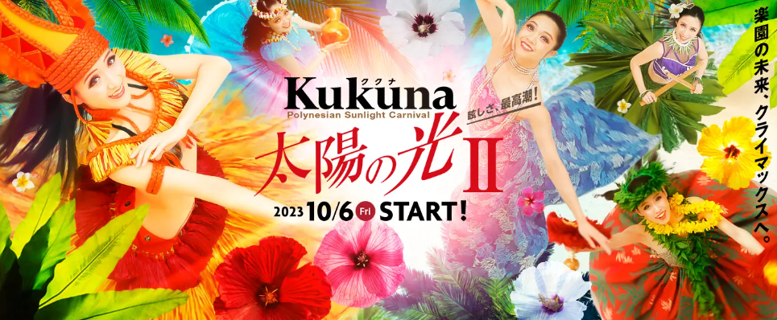
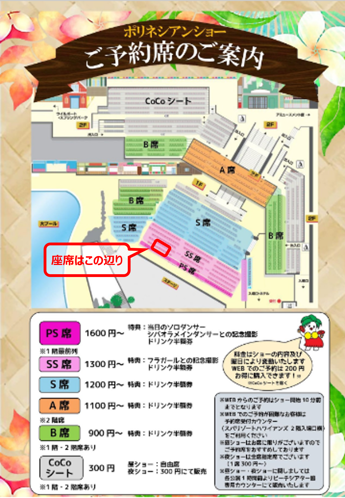

ショー概要
ポリネシアン・サンライトカーニバル
「Kukuna（ククナ） 太陽の光 II」

ハワイ・ニュージーランド・タヒチなどの華やかな伝統的ダンスのほか、
サモアのファイヤーナイフダンスも堪能できる、充実した内容の昼のショー。
ショーの途中には小学生以下のお子様を対象とした体験コーナーもある。
因みに、「Kukuna（ククナ）」はハワイ語で「太陽の光」の意味。
・時間：13:30-14:00
・場所：ウォーターパーク・ビーチシアター
・ショーの演目や詳細はこちら
・当日のショー出演者(予定)はこちら
座席

座席番号：SS 39 / SS 40 / SS 41 / SS 42 / SS 43
前から2列目を横並びで5席予約しています。
席の利用は公演30分前(13：00)から可能です。
ショー観覧・撮影の注意事項はこちら
特典① フラガールとの記念撮影
出演したフラガールと記念撮影ができます。(指名不可)
記念撮影に使用するカメラは持参、かつ1グループにつき1台で、1シーンのみの撮影となります。
(注意事項)
・ステージ上では感染予防のため会話はご遠慮ください。
・出演者との握手など接触行為は感染予防のためご遠慮ください。
特典② ドリンク半額